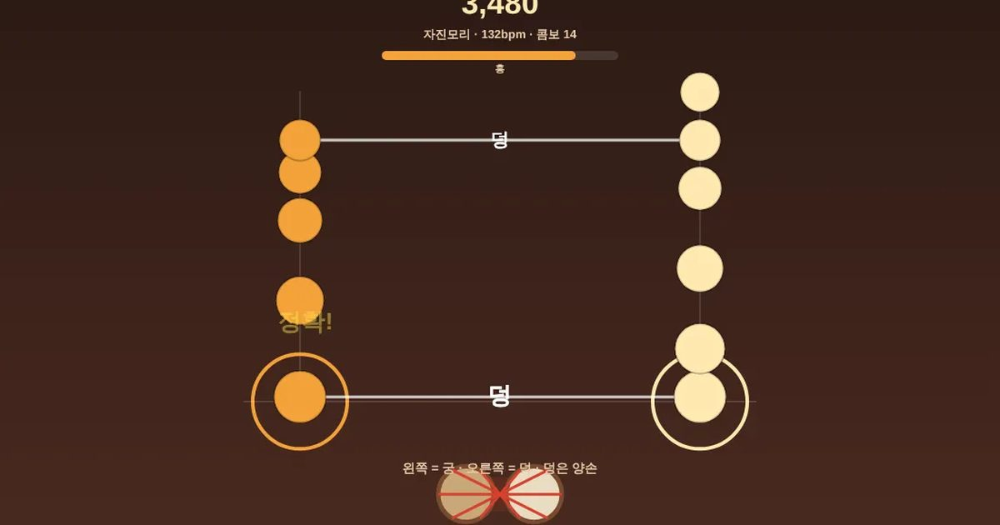

장구 장단
Janggu Beat
리듬 · 전통 · 두 손바로 시작설치 없음폰 · PC
▶ 지금 바로 하기로그인 없이 브라우저에서 바로 시작돼요
어떤 게임인가요?
굿거리 · 세마치 · 자진모리 · 휘모리! 흘러오는 장단에 맞춰 왼쪽(궁)과 오른쪽(덕)을 두드려요. 덩은 양손 동시. 정확할수록 "얼쑤!" 추임새가 커지고, 놓치면 흥이 식어요. 한국 전통 장단을 손으로 배워요.
목표 · 흘러오는 장단 표시가 선에 닿을 때 왼쪽(궁) · 오른쪽(덕)을 두드려 흥을 지키며 끝까지 가기.
이렇게도 찾아요
장구 게임리듬 게임장단 게임전통 리듬국악 게임박자 게임굿거리 자진모리rhythm gamekorean drum rhythmjanggu rhythmbeat tap game
#리듬게임 #장구 #국악 #전통놀이
게임 방법
- 표시가 선에 닿을 때 왼쪽은 「궁」, 오른쪽은 「덕」을 두드려요 (키보드 F · J)
- 「덩」은 양손 동시 (스페이스도 돼요)
- 정확 · 좋음 · 놓침 — 연속으로 맞히면 콤보, 흥(게이지)이 다 차면 점수 2배
- 흥이 바닥나면 끝 · 장단마다 빨라져요
등장하는 것들
- 궁 · 왼손 · 북편(낮은 소리)
- 덕 · 오른손 · 채편(높은 소리)
- 덩 · 양손 동시
공략 팁
- 덩(양손)은 두 레인이 줄로 이어진 표시 — 스페이스나 양손 동시
- 정확(±0.06초)이 좋음보다 점수가 높고 흥도 더 차요
- 흥이 100이 되면 8초 동안 점수 2배 — 그동안 놓치지 않기
- 자유 모드는 4마디마다 4%씩 빨라져요
이런 게임도 있어요
 투호 던지기전통놀이 · 힘 조절
투호 던지기전통놀이 · 힘 조절 블록 퍼즐퍼즐 · 타임어택
블록 퍼즐퍼즐 · 타임어택 꿈틀 지렁이고전 · 한 손
꿈틀 지렁이고전 · 한 손 알콩달콩 농장농장 경영 · 시간 도전
알콩달콩 농장농장 경영 · 시간 도전 미니 축구축구 · 4:4 · 1P/2P
미니 축구축구 · 4:4 · 1P/2P 몬스터 서바이벌생존 · 자동 공격
몬스터 서바이벌생존 · 자동 공격